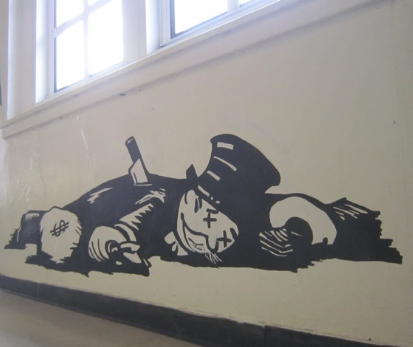

Econoambiente
¿Qué es la economía ambiental?
Siendo estrictamente técnicos, la economía ambiental estudia la manera en que la humanidad se organiza frente a la escasez de los recursos que puede otorgar la naturaleza, aún cuando el 50 a 60% de la producción termina en vertederos de basura, sin llegar a ningún consumidor, por la especulación del costo ganancia
En Ambientolandia buscamos dar valor agregado a esta definición, y queremos proponer análisis y variantes posibles a problemas inventados por un mundo de comodidas ficticias
Solucion al problema medioambiental
